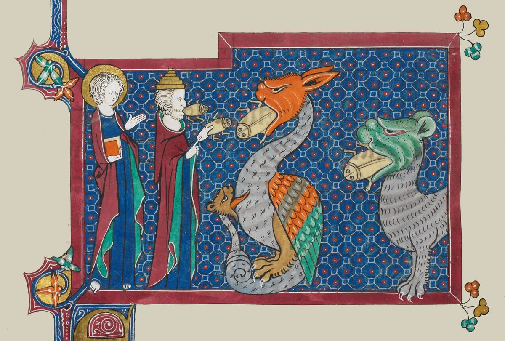

Revelation 16 — The Mister Translation

⚠ An English illuminator’s sixth bowl, beside verse 13, ‘three unclean spirits like frogs’ coming out of the mouths of the false prophet, the dragon and the beast, with John watching. The painter gives the false prophet a human body and a tall gold cap; the frogs look more like insects than frogs.

Translator’s Notes
“And I heard a loud voice out of the temple saying to the seven angels, ‘Go and pour out the seven bowls of the fury of God into the earth.’” The voice comes from the temple that was shut and filled with smoke at the end of chapter 15 (Revelation 15:8). “Bowls” and “fury” are the phialē and thymos of 15:7 (dictionary). The seven bowls follow the order of the seven trumpets of chapters 8 and 9: earth, sea, rivers and springs, sun, darkness, the Euphrates; and several of them are plagues of Egypt again. The KJV reads “pour out the vials of the wrath of God upon the earth”; the ASV reads “pour out the seven bowls of the wrath of God into the earth.”
“And the first went off and poured out his bowl into the earth, and a bad and evil sore came upon the people who had the mark of the beast and who worshiped its image.” The sores are the sixth plague of Egypt, “it became a boil of blisters, breaking out on man and on beast” (Exodus 9:10), and they fall on those who took the mark of Revelation 13:16. Helkos, “sore,” stands in three verses (dictionary). The other two are this chapter’s verse 11 and Lazarus at the rich man’s gate, whose sores the dogs licked (Luke 16:21). “Bad and evil” is kakon kai ponēron, two near-synonyms stacked. The KJV reads “a noisome and grievous sore”; the NWT 1984 reads “a hurtful and malignant ulcer”; the NIV reads “ugly, festering sores.”
“And the second poured out his bowl into the sea, and it became blood like that of a dead man, and every living soul died, the things in the sea. And the third poured out his bowl into the rivers and the springs of water, and it became blood.” The water turned to blood is the first plague of Egypt, “all the water that was in the Nile was turned to blood” (Exodus 7:20). The second trumpet struck a third of the sea, “a third of the creatures in the sea that had life died” (Revelation 8:9); the second bowl strikes all of it. “Every living soul” is pasa psychē zōēs, “every soul of life”; the Byzantine text reads zōsa, “living,” and leaves out “the things.” The ASV reads “every living soul died, even the things that were in the sea”; the KJV reads “every living soul died in the sea”; the NIV reads “every living thing in the sea died.”
⚠ “And I heard the angel of the waters saying, ‘Righteous are you, who is and who was, the Holy One, because you have judged these things.’” Angels set over the elements appear before: the four holding back the winds (Revelation 7:1) and the one “who has authority over the fire” (14:18). “Who is and who was” is the title of Revelation 11:17, where the third member, “who is to come,” has already dropped away. The KJV reads “Thou art righteous, O Lord, which art, and wast, and shalt be”: its “O Lord” and “shalt be” stand in none of the four editions named on these pages, and are reported to go back to the printed Greek of Theodore Beza (not checked here). “The Holy One” is hosios, the word the conquerors sang at 15:4, “For you alone are holy” (dictionary); Tregelles leaves out the article. The ASV reads “Righteous art thou, who art and who wast, thou Holy One”; the NWT 1984 reads “the loyal One.”
“Because they poured out the blood of holy ones and prophets, and you have given them blood to drink. They are worthy.” “Poured out” is the bowls’ own verb, ekcheō: they poured out blood, and blood is poured back. The souls under the altar had asked, “How long … will you not judge and avenge our blood” (Revelation 6:10). “They are worthy” is axioi eisin, the words said of the faithful in Sardis, “they will walk with me in white, because they are worthy” (Revelation 3:4); here it is a verdict. The Byzantine text reads “you gave.” The KJV reads “for they are worthy”; the NWT 1984 reads “They deserve it”; the NIV reads “as they deserve.”
“And I heard the altar saying, ‘Yes, Jehovah God, the Almighty, true and righteous are your judgments.’” The altar itself speaks, the altar under which the slain cried out (Revelation 6:9), and it says “Yes” to what the angel of the waters said. “Jehovah God, the Almighty” is the title of 15:3; the Greek reads kyrie. The KJV reads “I heard another out of the altar say,” and the Douay “I heard another, from the altar,” with a speaker the four editions do not have; the ASV reads “I heard the altar saying”; the NWT 1984 reads “Yes, Jehovah God, the Almighty.”
“And the fourth poured out his bowl upon the sun, and it was given to it to scorch people with fire. And the people were scorched with great heat, and they blasphemed the name of God who has the authority over these plagues, and they did not repent so as to give him glory.” The great multitude was promised the opposite, “the sun will not strike them, nor any scorching heat” (Revelation 7:16). “They did not repent” is the refrain of the trumpets, “they did not repent of their murders” (Revelation 9:21), and “to give him glory” is what the survivors of the earthquake did at 11:13, “gave glory to the God of heaven”; here they blaspheme instead (dictionary). The Byzantine text adds “the people” after “blasphemed.” The KJV reads “power was given unto him to scorch men with fire”; the ASV reads “it was given unto it to scorch men with fire”; the NWT 1984 reads “to [the sun] it was granted.”
“And the fifth poured out his bowl upon the throne of the beast, and its kingdom became darkened, and they gnawed their tongues from the pain, and they blasphemed the God of heaven from their pains and from their sores, and they did not repent of their works.” The throne is the one the dragon gave the beast (Revelation 13:2), and the darkness is the ninth plague of Egypt, “a darkness of thick gloom in all the land of Egypt” (Exodus 10:22). “Gnawed” is masaomai, which stands only here in the New Testament. “Pain” is ponos (dictionary). The KJV reads “upon the seat of the beast; and his kingdom was full of darkness”; the ASV reads “upon the throne of the beast; and his kingdom was darkened”; the NWT 1984 reads “they began to gnaw their tongues for [their] pain.”
“And the sixth poured out his bowl upon the great river, the Euphrates, and its water was dried up, so that the way of the kings from the rising of the sun might be prepared.” The sixth trumpet released the angels “bound at the great river Euphrates” (Revelation 9:14) (encyclopedia), and these are the book’s only two mentions of the river. “From the rising of the sun” is the east, where the sealing angel came from at Revelation 7:2. Who the kings are, readings differ: the Parthians beyond the Euphrates, Rome’s feared enemy in the first century, or the kings of the whole earth gathered in the next verses. The ASV reads “the way might by made ready for the kings that come from the sunrising”; the KJV reads “the way of the kings of the east”; the NWT 1984 reads “the kings from the rising of the sun.”
“And I saw, out of the mouth of the dragon and out of the mouth of the beast and out of the mouth of the false prophet, three unclean spirits like frogs; for they are spirits of demons, performing signs, which go out to the kings of the whole inhabited earth, to gather them for the war of the great day of God the Almighty.” Frogs were the second plague of Egypt, “the frogs came up and covered the land of Egypt” (Exodus 8:2); batrachos, “frog,” stands only here in the New Testament (dictionary). The false prophet is the second beast of chapter 13 named at last, the one that “performs great signs” (Revelation 13:13) (dictionary). “The whole inhabited earth” is the oikoumenē the dragon deceives (Revelation 12:9) (dictionary), and “the great day” is the day of Revelation 6:17, “the great day of their wrath has come.” The Byzantine text reads “that great day.” The KJV reads “the spirits of devils, working miracles”; the NWT 1984 reads “three unclean inspired expressions [that looked] like frogs”; the ASV reads “spirits of demons, working signs.”
“Look, I am coming like a thief. Blessed is the one who stays awake and keeps his garments, so that he may not walk naked and they see his shame.” The voice breaks into the vision without introduction, the voice of the risen Jesus, who said to Sardis, “If then you will not be watchful, I will come like a thief” (Revelation 3:3), and in the Gospel, “if the householder had known in which watch the thief comes, he would have stayed awake” (Matthew 24:43); Paul and Peter repeat it (1 Thessalonians 5:2, 2 Peter 3:10). The garments and the shame answer the counsel to Laodicea, “white garments, so that you may be clothed and the shame of your nakedness not be exposed” (Revelation 3:18). This is the third of the book’s seven sayings that begin “Blessed” (dictionary). Aschēmosynē, “shame,” stands in two verses; the other is Romans 1:27, where this translation prints “shamelessness.” The ASV sets the verse in parentheses, “(Behold, I come as a thief”; the KJV reads “Blessed is he that watcheth, and keepeth his garments”; the NIV reads “remains clothed.”
⚠ “And they gathered them to the place called in Hebrew Harmagedon.” The Greek verb is singular, as Greek allows after a neuter plural like “spirits”; the KJV reads “And he gathered them together into a place called in the Hebrew tongue Armageddon,” and the Douay “he shall gather them,” with God or the dragon as the subject; the ASV reads “they gathered them together into the place which is called in Hebrew Har-magedon.” Harmagedōn stands only here (dictionary). “In Hebrew” is Hebraisti, as with Abaddon at Revelation 9:11. The usual reading takes it as har Mĕgiddo, “mountain of Megiddo,” the city of “the waters of Megiddo” where the kings of Canaan fought (Judges 5:19) and whose king Joshua struck (Joshua 12:21) (encyclopedia). Megiddo stands on a mound in a plain, not on a mountain, and so other readings are offered, among them har mo‘ed, “the mount of assembly,” of Isaiah 14:13; readings differ. The English “Armageddon” comes through the Latin and the older printed Greek, which drop the opening H.
“And the seventh poured out his bowl upon the air, and a loud voice came out of the temple, from the throne, saying, ‘It has happened.’” The air was darkened at the fifth trumpet (Revelation 9:2). “It has happened” is gegonen, a single word in the perfect: it has come to be, and it stands. Its plural closes the book’s vision of the new creation, “They have happened” (Revelation 21:6). Jesus’s “It is finished!” at John 19:30 is a different verb, tetelestai. The Byzantine text reads “out of the temple of heaven.” The KJV reads “saying, It is done”; the NWT 1984 reads “It has come to pass!”; the TLB reads “It is finished!”
⚠ “And there were flashes of lightning and voices and peals of thunder, and there was a great earthquake, such as there had not been since people came to be on the earth, so great an earthquake, so mighty.” The storm from the throne (Revelation 4:5) comes after the censer is thrown down (8:5) and after the seventh trumpet (11:19), each time larger, and this is the last. “Such as there had not been” is the formula of the hail in Egypt, “such as had not been in all the land of Egypt since it became a nation” (Exodus 9:24). Westcott-Hort reads “since people came to be”; Tregelles and the 28th Nestle-Aland edition read the singular, “since a human being came to be,” and the Byzantine text “since the people came to be.” The ASV reads “such as was not since there were men upon the earth, so great an earthquake, so mighty”; the NWT 1984 reads “since men came to be on the earth.”
“And the great city came to be in three parts, and the cities of the nations fell. And Babylon the great was remembered before God, to give her the cup of the wine of the fury of his wrath. And every island fled, and mountains were not found.” “The great city” was named at Revelation 11:8, and at 11:13 a tenth of it fell; whether it is Jerusalem, Rome or Babylon here, readings differ. Babylon’s cup was announced at Revelation 14:8 and 14:10; “the fury of his wrath” joins thymos and orgē in one phrase (dictionary). At the sixth seal “every mountain and island was moved from its place” (Revelation 6:14); now they are gone. The KJV reads “great Babylon came in remembrance before God”; the ASV reads “the cup of the wine of the fierceness of his wrath”; the NWT 1984 reads “the cup of the wine of the anger of his wrath.”
“And great hail, as heavy as a talent, comes down out of heaven on the people; and the people blasphemed God because of the plague of the hail, because its plague is exceedingly great.” Hail was the seventh plague of Egypt (Exodus 9:24), and Jehovah threw down “great stones” from the heavens on Joshua’s enemies (Joshua 10:11). Chalaza, “hail,” stands in three verses, all in Revelation (dictionary). The others are 8:7 and 11:19. Talantiaios, “as heavy as a talent,” stands only here; a talent was the largest unit of weight, some tens of kilograms, and its value differed from place to place. The verb “comes down” is present, as if it were falling as John writes. The KJV reads “every stone about the weight of a talent”; the NIV reads “each weighing about a hundred pounds”; the NWT 1984 reads “because the plague of it was unusually great.”
Patterns worth carrying forward
What this chapter answers. The bowls handed out in chapter 15 are poured, one after another, in the order of the trumpets of chapters 8 and 9, and several of them are the plagues of Egypt again: sores, water turned to blood, frogs, darkness and hail. Each trumpet struck a third; each bowl strikes the whole. Three times the people blaspheme, and twice the chapter says they did not repent. Between the sixth bowl and the seventh, the voice of Jesus breaks in, “Look, I am coming like a thief.”
Where this translation keeps the exact words: “bad and evil”; “every living soul”; “who is and who was,” as at 11:17; “the Holy One” for hosios; “They are worthy,” as at 3:4; “the altar saying”; “Jehovah God, the Almighty”; “from the pain”; “from the rising of the sun,” as at 7:2; “the whole inhabited earth,” as at 12:9; “like a thief,” as at 3:3; “Harmagedon,” with its opening H; “It has happened,” beside 21:6’s “They have happened”; “since people came to be”; and “as heavy as a talent.”
Echoes paid. The seven bowls of Revelation 15:7, poured, as promised at the close of Revelation 15; the mark and image of Revelation 13:16; hosios from Revelation 15:4; the souls under the altar of Revelation 6:9–10; the Euphrates of Revelation 9:14; the false prophet, the second beast of Revelation 13:13, named; the thief of Revelation 3:3; the great city of Revelation 11:8; Babylon’s cup of Revelation 14:10; and the lightning, voices, thunder, earthquake and hail of Revelation 11:19.
Echoes planted. Babylon the great, “the great prostitute,” shown to John by one of the seven angels with the seven bowls in chapter 17; her fall in chapter 18; and the beast and the false prophet thrown alive into the lake of fire at 19:20 (these two yet to come in this translation).
Next in this book: Revelation 17. One of the seven angels with the bowls shows John the great prostitute seated on many waters, a woman on a scarlet beast with seven heads and ten horns, “Babylon the great, the mother of prostitutes,” drunk with the blood of the holy ones; the seven heads as seven mountains and seven kings; and the ten kings who make war on the Lamb.